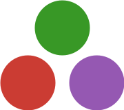
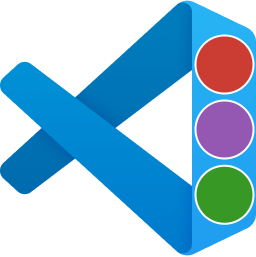
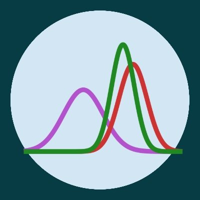

Intro to Bayes - a one day workshop

Aim
The aim of this one-day workshop is to introduce:
- the basics of Bayesian statistics though some simple models
- the Bayesian approach to prediction and decision making
- approximation and sampling algorithms for posterior inference
- Bayesian regression and classification
- probabilistic programming in Stan and Turing that will allow the user to tackle serious real-world problems with ease.
The treatment of each topic will necessarily be more brief than I would like to, but the partipants can dig deeper by:
reading in the book suggested below
experiment with the extra material provided below
follow along in the material for my two courses:
Lecturer
Mattias Villani
Professor of Statistics
Stockholm University
Literature
- Villani, M. (2025). Bayesian Learning (draft, later chapters are work in progress)
Workshop plan and schedule
Lecture 1 - The Bayesics
Time: 9.00-9.50
Reading: Ch. 1, 2.1-2.4 | Slides
Interactive: Beta distribution | Bernoulli data - beta prior | Gaussian known variance | Poisson model | Exponential model | Credible intervals
Lecture 2 - Multi-parameter models, Marginalization, Prior elicitation and Prediction
Time: 10.00-10.50
Reading: Ch. 3.1-3.5, Ch.4 and Ch. 6 | Slides
Interactive: Scaled inverse-chi2 distribution | Gaussian model | Dirichlet distribution | Multinomial model | Prior predictive Poisson model
☕ coffee
Lecture 3 - Bayesian Regression and Regularization
Time: 11.10-12.00
Reading: Ch. 5 and Ch. 12 | Slides
Interactive: Linear regression
🍲 lunch
Lecture 4 - Bayesian Classification and Posterior Approximation
Time: 13.00-13.50
Reading: Ch. 7 and Ch. 8 | Slides
Interactive: Beta regression for proportions
Notebook: Logistic regression Titanic data in R: html and quarto
Lecture 5 - Introduction to Gibbs sampling, MCMC and HMC
Time: 14.00-14.50
Reading: Ch. 9 and Ch. 10 (very incomplete) | Bayesian Data Analysis Ch. 10-11 and 12.4 | Slides
Interactive: Random walk Metropolis | HMC | Leapfrog integrator | HMC on multimodal posterior
Videos: Gibbs sampling when parameters are very correlated | Metropolis-Hastings vs HMC
☕ coffee
Lecture 6 - Implementing Bayesian Learning with Probabilistic Programming
Time: 15.10-16.00
Reading: Ch. 1, 2.1-2.4 | Slides
Notebooks: Polynomial regression for fossil data in Rstan html and quarto
Code: Getting started with Turing.jl: instructions and code | Survival analysis in Stan
Exercises
Solutions for each problem can be folded out on the pages below (but try to solve it yourself first!).
- Exercise 2.1 - Math exercise on the posterior for exponentially distributed data
- Exercise 2.2 - Math and computer exercise on exponential distribution for survival data
- Exercise 2.3 - Computer exercise on Weibull distribution for survival data
- Exercise 7.2 - Normal posterior approximation for the Weibull survival model
- Exercise 7.3 - Normal posterior approximation for the Weibull survival regression model
- Stan to sample from the posterior for the Weibull survival regression model - TBA
prob_weibullreg_lung_optim.html
Extras
Interactive: List of Bayesian learning widgets | List of Statistical distributions widgets
Computing
R and RStan
Julia and Turing
 Install Julia
 Install VS Code
Install VS Code
 Install Julia extension for VS Code | Guided Youtube video
 Install and get started with Turing.jl | Turing tutorials